← Back to Projects
04 • Vertical Residential
Desert Pearl Residences
A vertical residential jewel shaped by desert light, skyline views, premium hospitality and a calm podium oasis.
HOSPITALITY IN THE SKY
Design Narrative
The tower is conceived less as stacked apartments and more as a vertical hospitality experience anchored by a shaded urban oasis.
The tower is treated as an urban jewel: reflective, calm and service-oriented, with the podium acting as a retreat from the density of the city.
Pearl as urban jewel, dune-inspired terraces, shaded podium oasis and vertical privacy.
Luxury apartmentsServiced-residence atmospherePodium amenitiesSky terracesPool deckRetail / lobby edge
Strategic Lens — Vertical Hospitality Value
How can high-rise density become a premium lifestyle product rather than a repetitive tower?
Treat podium and tower as one experience: oasis below, skyline living above.
Dune-like terraces, pearl-inspired identity, pool deck and sky amenities turn height into experience.
A reflective podium oasis rises into panoramic serviced-residence living.
The project differentiates through the entire journey from arrival to skyline — not silhouette alone.
Curated Visual Gallery
Desert Pearl Residences
A visual sequence of architecture, atmosphere, movement and detail.

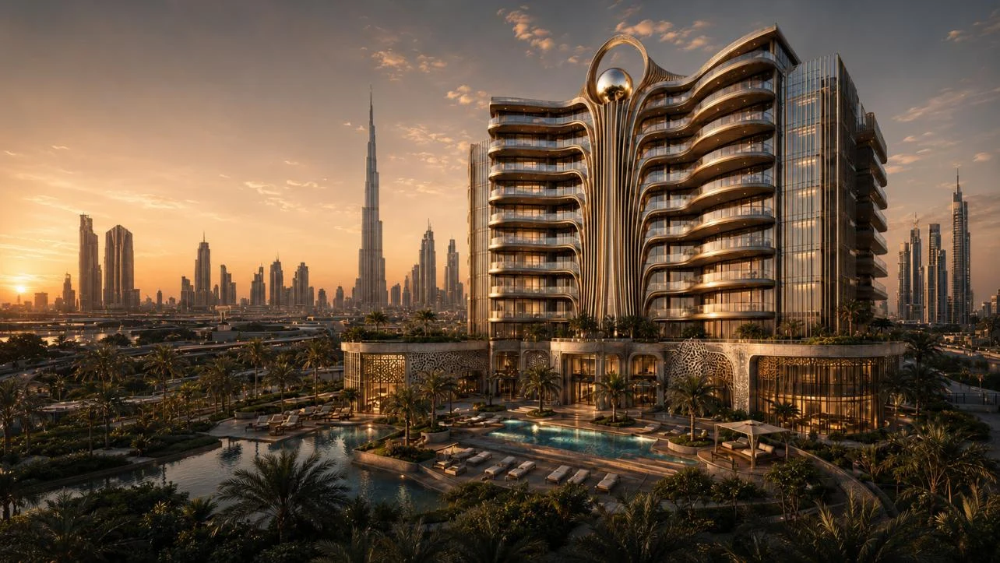
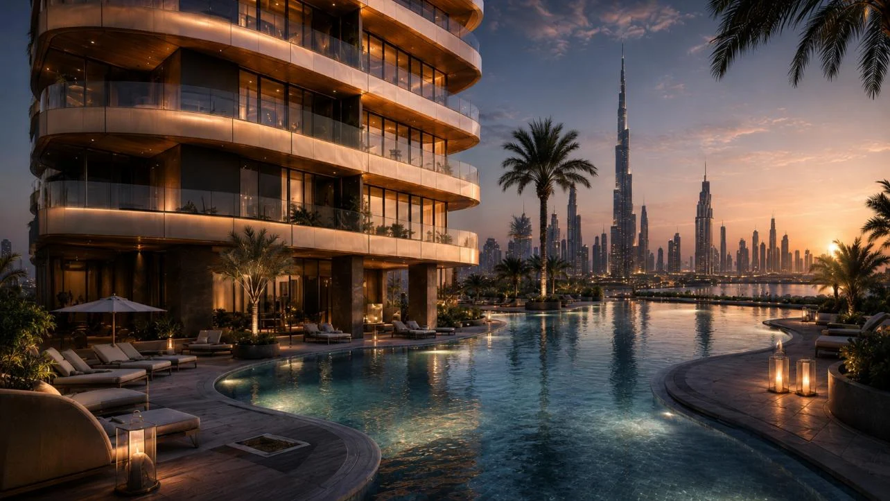
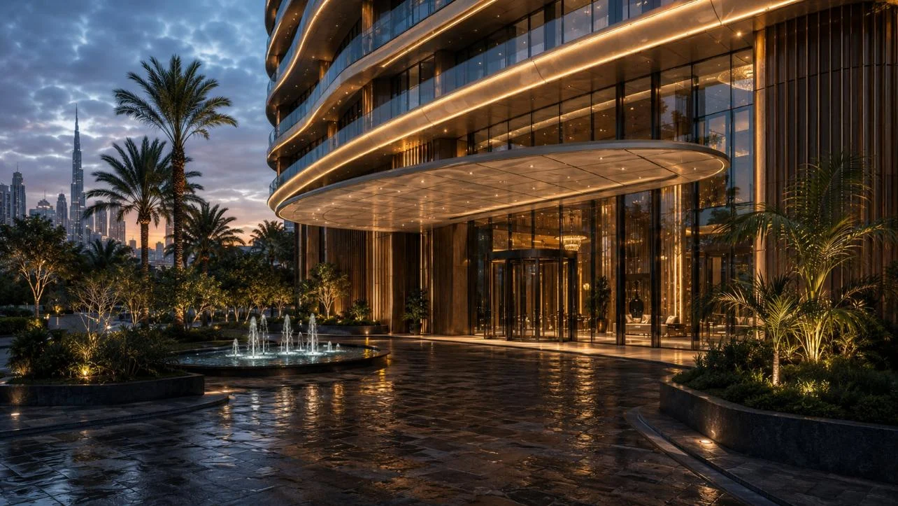
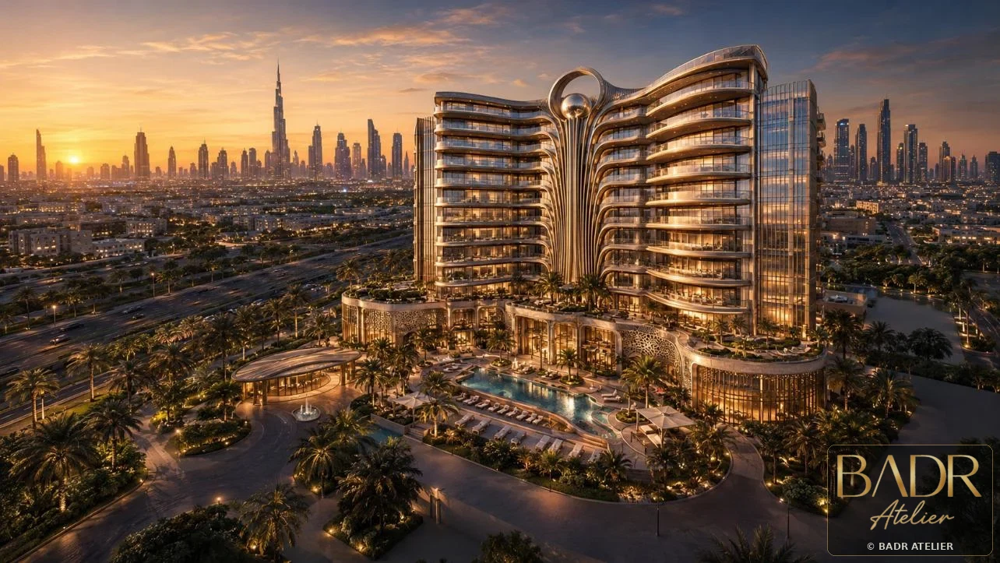
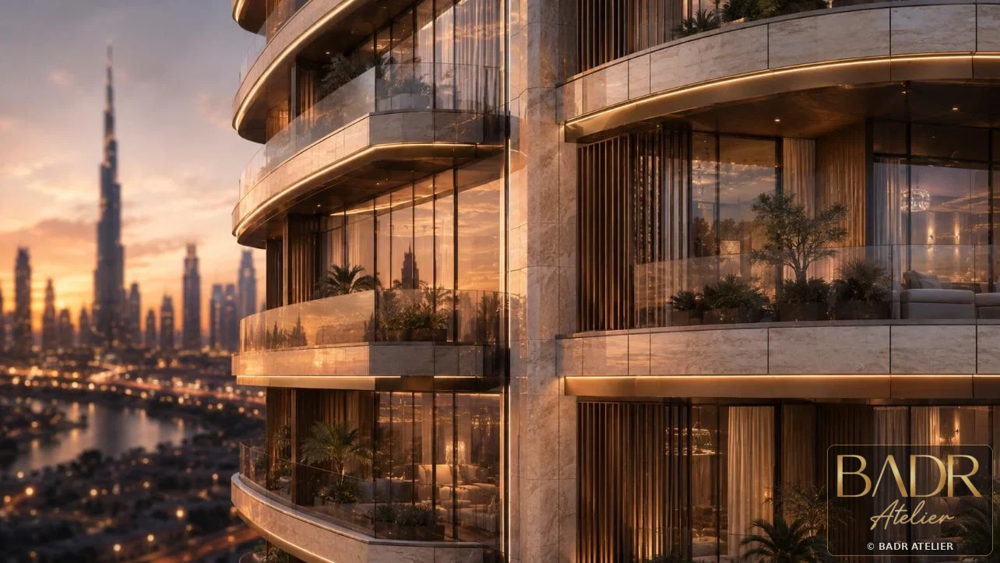
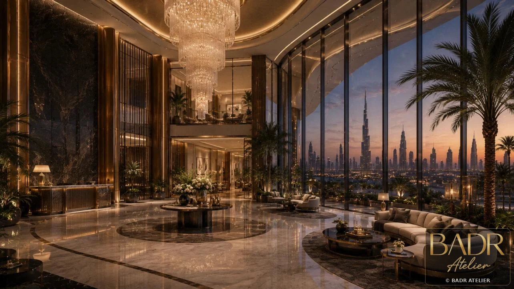
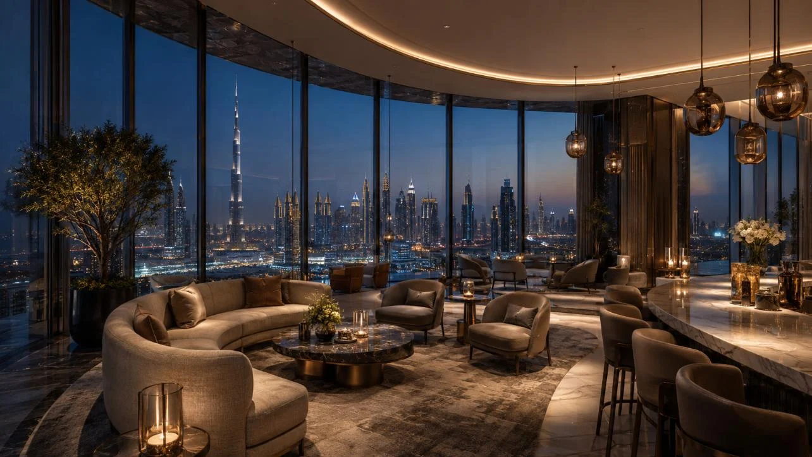
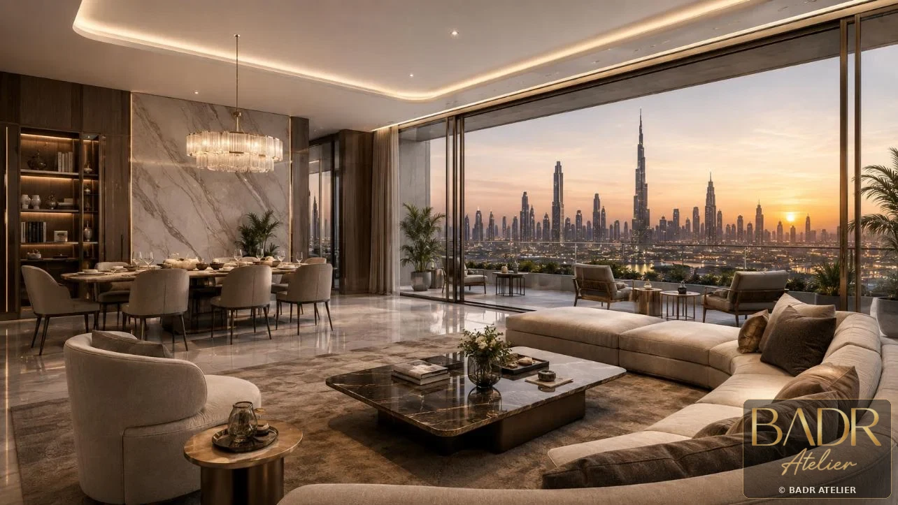
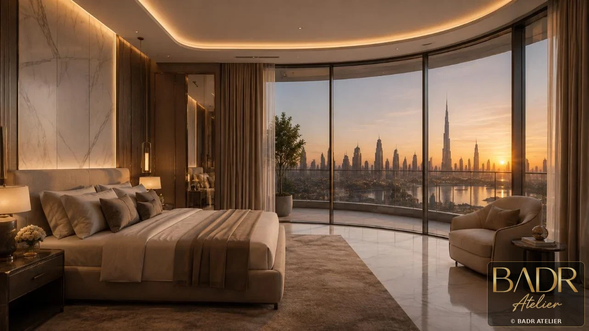
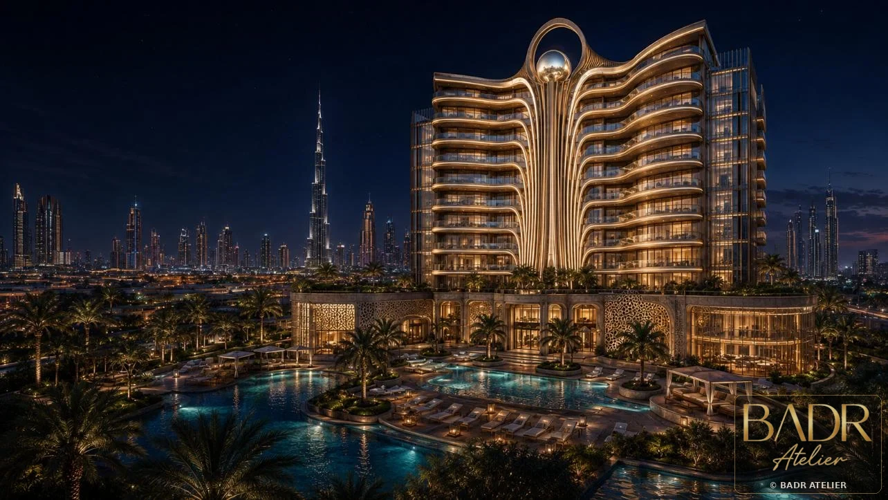
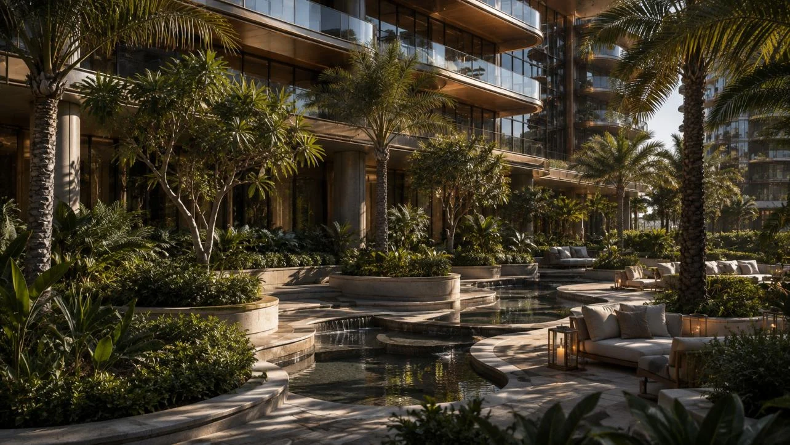
Key Features
- Luxury apartments
- Serviced-residence atmosphere
- Podium amenities
- Sky terraces
- Pool deck
- Retail / lobby edge
- Panoramic city views
Spaces + Experiences
- Arrival lobby
- Podium oasis
- Pool deck
- Sky terraces
- Residential lounges
- Apartments